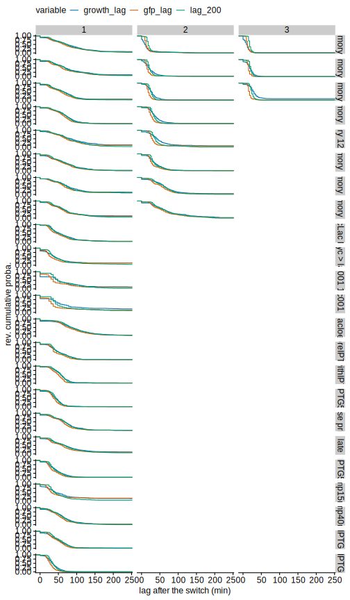

Measuring the growth and lac induction lags in switching environments
Thomas Julou
11 October, 2020
Estimation
First, let’s select the cells that undergo a switch (i.e. the first frame occured before a switch to lactose, and the last frame after (or at) the switch). We “prolonge” each cell by summing the variables (length and total GFP) of its two daughters, and discard cells for which the acquisition stopped less than 30’ after the switch (10 points; it is difficult to distinguish growth from lag on shorter traces).
Based on the log of the length traces, the growth lag is computed by fitting a flat lag followed by a linear increase to the subset of each trace where the length is smaller than 3 times the length at the switch (note that the cells do more than doubling because daughters’ lengths are summed).
Estimating the induction lag is more cumbersome because GFP traces do not follow a general shape. We compute two lag estimates:
- the GFP lag is computed by fitting a flat lag followed by a linear increase to the subset of each GFP trace where it is lower than the GFP at the switch plus 1000 GFP molecules (NB: the typical value at the switch is 100 molecules while fully induced cells have ca. 6000 molecules in average).
- the lag_200 is computed by finding the delay until the cell increases its GFP by 200 molecules after the switch.
myframes_switching <- myframes %>%
ungroup %>%
filter(!(condition %in% c('glucose', 'lactose', 'mg1655'))) %>%
filter(!discard_start, !discard_top) %>%
select(condition, date, pos, gl, id, genealogy, start_time, end_time, end_type, dt,
time_sec, medium, m_start, m_end, gfp_nb, length_um, m_cycle, cell_num_in_lane, total_cell_in_lane) %>%
# prolonge traces with daughters' data
partition(date, pos, gl, cluster=mycluster) %>%
# group_by(date, pos, gl) %>%
do((function(.dfgl) {
# browser()
.dfgl %>%
group_by(id) %>%
mutate(is_lac=str_detect(medium, 'lactose') | str_detect(medium, 'lactulose') |
str_detect(medium, fixed('+TMG')) | str_detect(medium, 'lacCM'),
t_lac_switch=min(m_start[is_lac]), t_lac_end=min(m_end[is_lac])) %>%
filter(first(time_sec)<=t_lac_switch & last(time_sec)>=unique(t_lac_switch)) %>%
do((function(.dfc) bind_rows(
mutate(.dfc, type='cell'),
.dfc %>%
ungroup %>% slice(1L) %>% # head(1) %>%
(function(.df)
# find the genealogy of the daughters and extract the corresponding rows from myframes
bind_rows(mutate(.df, join_gen=paste0(genealogy, 'B')),
mutate(.df, join_gen=paste0(genealogy, 'T')) ) %>%
semi_join(.dfgl %>% mutate(join_gen=genealogy),
., by='join_gen') ) %>%
ungroup %>% mutate(genealogy=get_parent_cid(genealogy)) %>%
select(condition, date, pos, gl, id, genealogy, dt,
time_sec, medium, m_cycle, m_start, m_end, gfp_nb, length_um) %>%
# group by time, compute the stat of both daughters' and keep only the first row
# compared to summarise, this keeps all other variables
group_by(genealogy, time_sec) %>%
mutate(gfp_nb=ifelse(n()==2, sum(gfp_nb), 2*gfp_nb),
length_um=ifelse(n()==2, sum(length_um), 2*length_um),
# medium=unique(medium), m_cycle=unique(m_cycle),
type=paste0(n(), "dg")) %>%
slice(1L)
) )(.))
})(.) ) %>%
collect() %>%
# myframes_switching <- myframes_switching %>%
# fill in missing values
group_by(date, pos, gl, genealogy) %>%
fill(start_time, end_time, t_lac_switch, t_lac_end) %>%
mutate(ugen=paste(date, pos, gl, genealogy, sep='.'),
pre_switch=time_sec>t_lac_switch+60 & time_sec<t_lac_switch+10*60) %>%
# select data used for lag estimation
group_by(condition, ugen) %>%
mutate(switch_idx=first(m_cycle),
fit_lag=ifelse(
type!='1dg' & # discard traces after one daughter is lost (because of discontinuity)
tail(time_sec[type!='1dg']-t_lac_switch[type!='1dg'], 1) > first(4 * dt) & # require at least 4 frames after the switch (one point after the gfp_ini window)
m_start==t_lac_switch # focus on the medium after the switch
, TRUE, FALSE) )Let’s visualise the data used to estimate the lags:
myframes_switching %>%
filter(fit_lag) %>%
filter(condition!='switch_long_lac_hiExpr') %>%
ggplot(aes(time_sec - 2*3600, gfp_nb, col=ugen, alpha=type)) +
facet_wrap(~condition+date, dir="v", ncol=2, labeller=labeller(.cols=label_value, .multi_line=FALSE)) +
# geom_rect(aes(xmin=t_start - 2*3600, xmax=t_end - 2*3600, ymin=-Inf, ymax=Inf, x=NaN, y=NaN, group=1), fill=rgb(1, 0, 0, .1), col='red', data=filter(condition_ts, condition=='switch', medium=='lactose')) +
geom_path() + # geom_point() +
scale_colour_periodic(guide='none') +
scale_alpha_discrete(range=c(0.1, 0.6)) +
scale_x_hours() + #, limits=c(19*3600, 23*3600)) +
ylim(-100, 1e4) + expand_limits(x=0, y=0) +
labs(y='total fluorescence (GFP molecules)') +
theme(legend.position="top")
# myframes_switching %>%
# filter(condition=='switch_long_lac_hiExpr') %>%
# filter(fit_lag) %>%
# # group_by(date, pos, gl, id) %>% summarise(n=n()) %>% qplot(n, data=., binwidth=10)
# ggplot(aes(time_sec - 2*3600, length_um, col=ugen)) +
# facet_wrap(~condition, ncol=1) +
# # geom_rect(aes(xmin=t_start - 2*3600, xmax=t_end - 2*3600, ymin=-Inf, ymax=Inf, x=NaN, y=NaN, group=1), fill=rgb(1, 0, 0, .1), col='red', data=filter(condition_ts, condition=='switch', medium=='lactose')) +
# # geom_path() + # geom_point() +
# stat_smooth(se=FALSE, geom='line', alpha=.2) +
# scale_colour_periodic(guide='none') +
# # scale_alpha_discrete(range=c(0.1, 0.6)) +
# scale_x_hours(limits=c(3*3600, 12*3600)) +
# scale_y_continuous(trans='log2')mycells_switching <- myframes_switching %>%
filter(fit_lag) %>%
# group_by(condition, switch_idx, date, pos, gl, ugen) %>%
partition(condition, switch_idx, date, pos, gl, ugen, cluster=mycluster %>% cluster_assign_func(compute_lag) ) %>%
do((function(.df){
# browser()
# print(unique(.df$ugen))
# if (unique(.df$ugen)=="20150703.0.11.0:BBBBTBB") browser()
# if (unique(.df$ugen)=="20150703.3.11.0:BBTBBB") browser()
.cond <- head(.df$condition)
.preswitch_gfp <- mean(filter(.df, pre_switch)$gfp_nb)
.preswitch_length <- mean(filter(.df, pre_switch)$length_um)
# compute growth lag
.growth_lag <- .df %>% filter(time_sec>=t_lac_switch, length_um<3*.preswitch_length) %>%
pull(length_um) %>% log %>% compute_lag(.scaling_factor=1) #,.plot=TRUE)
if (length(.growth_lag) == 0) { warning('growth lag estimation failed')
.growth_lag <- list(tau_idx=NaN, x_lag=NaN, slope_after=NaN)
}
if (.df$condition %in% c('switch_long_lac_hiExpr')) {
.gfp_lag <- list(tau_idx=NaN, x_lag=NaN, slope_after=NaN)
.t_200 <- NaN
.t_200_fail <- NaN
.t_1000 <- NaN
.t_1000_fail <- NaN
} else {
.gfp_lag <- .df %>% filter(time_sec>=t_lac_switch, gfp_nb<.preswitch_gfp+ifelse(.cond!='switch_iptg', 1000, 2000)) %>%
pull(gfp_nb) %>% compute_lag #(.plot=TRUE)
if (length(.gfp_lag) == 0)
.gfp_lag <- list(tau_idx=NaN, x_lag=NaN, slope_after=NaN)
# compute induction lag
.tmin <- filter(.df, pre_switch)$time_sec %>% max
.t_200 <- .df %>% filter(time_sec>.tmin, gfp_nb>.preswitch_gfp+200) %>% pull(time_sec) %>% first() # returns NA if empty
.t_200_fail <- .df %>% filter(time_sec>.t_200, gfp_nb<.preswitch_gfp+200) %>% pull(time_sec) %>% first()
.t_1000 <- .df %>% filter(time_sec>.tmin, gfp_nb>.preswitch_gfp+1000) %>% pull(time_sec) %>% first() # returns NA if empty
.t_1000_fail <- .df %>% filter(time_sec>.t_1000, gfp_nb<.preswitch_gfp+1000) %>% pull(time_sec) %>% first()
}
.dt <- first(.df$dt) # don't use unique as some values are NA
return(data.frame(dt=.dt, n_fit=nrow(.df), genealogy=gsub(":", "", unique(.df$genealogy)),
t_lac_switch=first(.df$t_lac_switch), t_lac_end=first(.df$t_lac_end),
tmax_lag_fit=max(.df$time_sec), is_tmax_end=max(.df$time_sec)==first(.df$t_lac_end),
cell_num=filter(.df, time_sec==t_lac_switch)$cell_num_in_lane,
cell_num_from_top=filter(.df, time_sec==t_lac_switch)$cell_num_in_lane,
cell_num_from_bottom=filter(.df, time_sec==t_lac_switch)$total_cell_in_lane-filter(.df, time_sec==t_lac_switch)$cell_num_in_lane,
# switch_idx=filter(.df, is_lac)$m_cycle %>% first,
time_birth=unique(.df$start_time), time_div=unique(.df$end_time),
growth_lag=(.growth_lag$tau_idx-1)*.dt, growth_lag_length=exp(.growth_lag$x_lag), growth_lag_rate_after=.growth_lag$slope_after / .dt,
gfp_lag=(.gfp_lag$tau_idx-1)*.dt, gfp_lag_length=.gfp_lag$x_lag, gfp_lag_slope_after=.gfp_lag$slope_after / .dt,
gfp_ini=.preswitch_gfp, length_ini=.preswitch_length,
lac_200=.t_200, lac_200_fail=.t_200_fail,
lac_1000=.t_1000, lac_1000_fail=.t_1000_fail))
})(.)) %>%
collect() %>%
arrange(condition, ugen) %>% # sort data after `partition()`
# mycells_switching <- mycells_switching %>%
mutate(lag_200=ifelse(is.na(lac_200) & !is.nan(lac_200), Inf, lac_200-t_lac_switch), # set lag_200 to Inf if no restart (is `& !is.nan(lac_200)` really needed?)
lag_1000=ifelse(is.na(lac_1000) & !is.nan(lac_1000), Inf, lac_1000-t_lac_switch)) %>%
# # more complicated heuristic (dropped during MoMA_Methods revisions)
# mutate(lac_200=ifelse(is.na(lac_200), Inf, lac_200), # set lag_200 to Inf if no restart
# lag_200 = ifelse(is.na(lac_200_fail) | lac_200_fail-lac_200 > 20*60, lac_200-t_lac_switch, NaN) ) %>%
# discard lag fit with slope too close to 0
mutate(gfp_lag=ifelse(!is.na(gfp_lag_slope_after) & between(gfp_lag_slope_after, 0.12, Inf), gfp_lag, Inf),
gfp_lag_slope_after=ifelse(!is.na(gfp_lag_slope_after) & between(gfp_lag_slope_after, 0.12, NaN), gfp_lag_slope_after, NaN),
growth_lag=ifelse(!is.na(growth_lag_rate_after) & between(growth_lag_rate_after, 4e-5, 2.5e-4), growth_lag, Inf),
growth_lag_rate_after=ifelse(!is.na(growth_lag_rate_after) & between(growth_lag_rate_after, 4e-5, 2.5e-4), growth_lag_rate_after, NaN)) %>%
# set to NA lags of uninduced cells with traces shorter than the lactose episode
mutate(reach_lac_end = ifelse(!is_tmax_end, near(tmax_lag_fit, t_lac_end-dt, to=1e-3),
near(tmax_lag_fit, t_lac_end, to=1e-3)) ) %>%
mutate(lag_200=ifelse(is.infinite(lag_200) & !reach_lac_end, NA, lag_200),
lag_1000=ifelse(is.infinite(lag_1000) & !reach_lac_end, NA, lag_1000),
gfp_lag=ifelse(is.infinite(gfp_lag) & !reach_lac_end, NA, gfp_lag),
growth_lag=ifelse(is.infinite(growth_lag) & !reach_lac_end, NA, growth_lag) )
# ggplot(mycells_switching) +
# facet_grid(condition~., margins=TRUE, scales='free') +
# geom_vline(xintercept=0.12, col='red') +
# geom_histogram(aes(gfp_lag_slope_after), binwidth=0.025)
#
# ggplot(mycells_switching) +
# facet_grid(condition~., margins=TRUE, scales='free') +
# geom_vline(xintercept=4e-5, col='red') +
# geom_histogram(aes(growth_lag_rate_after), binwidth=2e-6)
# add fit prediction and residual to myframes_switching
myframes_switching <- myframes_switching %>%
group_by(ugen) %>%
mutate(switch_idx=m_cycle[is_lac] %>% first) %>%
ungroup %>%
left_join(mycells_switching %>% ungroup %>%
select(ugen, growth_lag, growth_lag_length, growth_lag_rate_after,
gfp_lag, gfp_lag_length, gfp_lag_slope_after,
gfp_ini, lag_200, lac_200, lag_1000, lac_1000)) %>%
mutate(length_predict=ifelse(time_sec<t_lac_switch+growth_lag, growth_lag_length,
growth_lag_length * exp(growth_lag_rate_after*(time_sec-t_lac_switch-growth_lag) )),
length_predict=ifelse(time_sec>=t_lac_switch, length_predict, NA),
llength_residual=log(length_um)-log(length_predict))
# # visual control
# for(i in 1:1000) {
# filter(myframes_switching, cell==nth(unique(ugen), i)) %>%
# filter(myframes_switching, ugen==unique(ugen)[i]) %>%
# (function(.x) ggplot(.x)+
# geom_vline(aes(xintercept = unique(t_lac_switch-start_time+growth_lag)), lty='dashed') +
# geom_point(aes(time_sec-start_time, log(length_um), col=medium)) +
# geom_line(aes(time_sec-start_time, log(length_predict))) ) %>%
# print
# scan("")
# }We use the following convention:
- NaN: lag estimation failed (or no lac-GFP data)
- NA: lag longer than the gfp (resp. length) time series (when time series is shorter than the lactose episode)
- Inf: lag longer than the lactose episode
mycells_switching <-
# extract relevant frames
# don't discard NA lags otherwise filter(!discard_arrested) also discard NA lags
bind_rows(
# switching cells
mycells_switching %>% ungroup %>%
# filter(!is.na(lag_200)) %>%
mutate(type='pre', switch_ugen=ugen) %>%
select(type, ugen, switch_ugen, switch_idx, t_lac_switch) %>%
left_join(myframes) %>%
filter(time_sec <= t_lac_switch),
# parent cells
mycells_switching %>% ungroup %>%
# filter(!is.na(lag_200)) %>%
left_join(select(myframes, date, gl, pos, id, parent_id, ugen) %>% group_by(ugen) %>% slice(1)) %>%
mutate(type='parent', switch_ugen=ugen,
# cell=paste(date, pos, gl, parent_id, sep='.')) %>%
ugen=get_parent_cid(ugen) ) %>%
select(type, ugen, switch_ugen, switch_idx, t_lac_switch) %>%
left_join(myframes) %>%
filter(time_sec <= t_lac_switch)
) %>%
# compute elongation rate for these cells
group_by(type, ugen, switch_ugen) %>%
do((function(.df) {
# browser()
if (dim(.df)[1] < 5) return(data.frame())
.mod <- lm( log(length_um)~time_sec, .df)
data.frame(logl_time_slope=.mod$coefficients[2],
logl_time_r2=cor(.df$time_sec, log(.df$length_um))^2)
})(.)) %>%
# reshape and join to mycells_switching
ungroup %>%
mutate(ugen=switch_ugen, switch_ugen=NULL) %>%
gather(var, val, -type, -ugen) %>%
mutate(var=paste(var, type, sep='_'), type=NULL) %>%
spread(var, val) %>%
right_join(mycells_switching) %>%
mutate(n_preswitch=(t_lac_switch-time_birth)/dt,
logl_time_slope_before=ifelse(n_preswitch<5,
logl_time_slope_parent, logl_time_slope_pre),
discard_arrested=ifelse(condition=='switch_gly_lac', NA, logl_time_slope_before <= min_growth_rate),
discard_arrested_=discard_arrested,
discard_arrested=FALSE, # disable this filtering to keep analysis description simple
)
# ggplot(mycells_switching) +
# geom_abline() +
# geom_point(aes(logl_time_slope_parent, logl_time_slope_pre, size=n_preswitch), alpha=0.2) +
# coord_cartesian(ylim=c(0, 3e-4))
# ggplot(mycells_switching) +
# geom_point(aes(n_preswitch, 1-logl_time_r2_pre), size=0.2, alpha=0.2) +
# scale_y_log10() +
# xlim(0, 50)Validation of the lag estimation
Let’s look at the proportion of cells for which a lag can be estimated and identify the different types of indetermination (based on the interaction between the different estimates):
options(knitr.kable.NA = '')
mycells_switching %>%
filter(! condition %in% c('switch_long_lac_hiExpr')) %>% # lag_200 is NaN
mutate(growth_lag=as.character(growth_lag), growth_lag=ifelse(is.na(growth_lag), 'NA', growth_lag),
growth_lag=ifelse(growth_lag %in% c('NaN', 'NA', 'Inf'), growth_lag, 'numeric'),
gfp_lag=as.character(gfp_lag), gfp_lag=ifelse(is.na(gfp_lag), 'NA', gfp_lag),
gfp_lag=ifelse(gfp_lag %in% c('NaN', 'NA', 'Inf'), gfp_lag, 'numeric'),
lag_200=as.character(lag_200), lag_200=ifelse(is.na(lag_200), 'NA', lag_200),
lag_200=ifelse(lag_200 %in% c('NaN', 'NA', 'Inf'), lag_200, 'numeric')) %>%
group_by(growth_lag, gfp_lag, lag_200) %>%
summarise(n=n()) %>%
ungroup %>% mutate(p=n/sum(n)) %>%
left_join(tribble(
~growth_lag, ~gfp_lag , ~lag_200 , ~comment,
#----------,----------,----------,----------------------,
"Inf" , "Inf" , "Inf" , "no restart",
"Inf" , "Inf" , "NA" , "no restart but wiggly fluo",
"Inf" , "Inf" , "numeric", "no restart (with minor fluo increase)",
"Inf" , "numeric", "Inf" , "fluo only restart but lower than 200",
"Inf" , "numeric", "NA" , "fluo only restart but wiggly",
"Inf" , "numeric", "numeric", "fluo restart but no growth",
"NA" , "numeric", "numeric", "fluo restart but no growth",
"NA" , "NA" , "NA" , "aborted time series (cell exit)",
"numeric" , "NA" , "NA" , "growth restart but not fluo",
"numeric" , "Inf" , "Inf" , "growth restart but not fluo",
"numeric" , "Inf" , "numeric", "(missed gfp_lag?)",
"numeric" , "numeric", "NA" , "(fluo either lower than 200 or wiggly)",
"numeric" , "numeric", "numeric", "success: growth and induction lags estimated"
)) %>%
knitr::kable(digits=2) %>%
kableExtra::kable_styling() %>%
identity()| growth_lag | gfp_lag | lag_200 | n | p | comment |
|---|---|---|---|---|---|
| Inf | Inf | Inf | 140 | 0.02 | no restart |
| Inf | Inf | numeric | 169 | 0.02 | no restart (with minor fluo increase) |
| Inf | numeric | Inf | 3 | 0.00 | fluo only restart but lower than 200 |
| Inf | numeric | numeric | 112 | 0.01 | fluo restart but no growth |
| NA | NA | NA | 341 | 0.04 | aborted time series (cell exit) |
| NA | NA | numeric | 68 | 0.01 | |
| NA | numeric | NA | 83 | 0.01 | |
| NA | numeric | numeric | 332 | 0.04 | fluo restart but no growth |
| numeric | Inf | Inf | 21 | 0.00 | growth restart but not fluo |
| numeric | Inf | numeric | 9 | 0.00 | (missed gfp_lag?) |
| numeric | NA | NA | 27 | 0.00 | growth restart but not fluo |
| numeric | NA | numeric | 24 | 0.00 | |
| numeric | numeric | NA | 15 | 0.00 | (fluo either lower than 200 or wiggly) |
| numeric | numeric | numeric | 7524 | 0.85 | success: growth and induction lags estimated |
options(knitr.kable.NA = NULL)For the growth lag, the residuals around the switch show less than 2% deviation from our model in average. In order to understand the distribution of residuals, it must be stratified by time: the residuals are the largest at the switch and decrease monotonically until the end of the lag exponential fit. During the post-lag exponential growth, the residuals continue to decrease.
myframes_switching %>%
filter(is.finite(growth_lag)) %>%
mutate(t_switch=time_sec-t_lac_switch-growth_lag, rel_resid=llength_residual/log(length_predict)) %>%
group_by(t_switch) %>%
summarise(mean=mean(rel_resid, na.rm=TRUE), n=n(), sem=sd(rel_resid, na.rm=TRUE)/sqrt(n)) %>%
ungroup() %>% filter(n>max(n)/20) %>%
ggplot(aes(t_switch/60, mean, alpha=n)) +
geom_errorbar(aes(ymin=mean-sem, ymax=mean+sem)) +
geom_line() +
coord_cartesian(xlim=c(-100, 150)) +
labs(x='time after switch (min)', y='scaled residuals average')
Comparison of lag types
ggplot(data=mycells_switching, aes(lag_200/60, gfp_lag/60)) +
# facet_grid(switch_idx~condition, scales='free', margins=TRUE) +
facet_wrap(~condition+switch_idx, scales='free') +
geom_abline(col='red', alpha=0.5) +
geom_point(alpha=.2, size=.2) +
labs(x='induction lag (+200 GFP molecules; min)', y='GFP lag (min)') +
expand_limits(x=0, y=0)
ggplot(data=mycells_switching, aes(growth_lag/60, gfp_lag/60)) +
# facet_grid(switch_idx~condition, scales='free') + #, margins=TRUE) +
facet_wrap(~condition+switch_idx, scales='free') +
geom_abline(col='red', alpha=0.5) +
geom_point(alpha=.2, size=.2) +
labs(x='growth lag (min)', y='GFP lag (min)') +
expand_limits(x=0, y=0) 
ggplot(data=mycells_switching, aes(growth_lag/60, lag_200/60)) +
# facet_grid(switch_idx~condition, scales='free', margins=TRUE) +
facet_wrap(~condition+switch_idx, scales='free') +
geom_abline(col='red', alpha=0.5) +
geom_point(alpha=.2, size=.2) +
expand_limits(x=0, y=0) 
NB: the lower bound of the GFP lags probably comes from GFP maturation time.
(myplots[['lags_types_correl']] <- function(.min_psize=.5, .max_psize=3)
mycells_switching %>% ungroup() %>%
filter(!date %in% discarded_dates) %>%
filter(!discard_arrested) %>%
filter(str_detect(condition, '^switch_[0-9]+h$')) %>%
filter(switch_idx==1) %>%
mutate(growth_lag=ifelse(growth_lag>240*60, Inf, growth_lag) ) %>%
group_by(growth_lag, lag_200) %>%
summarise(n=n()) %>% ungroup %>%
mutate(infinite=ifelse(is.infinite(growth_lag) | is.infinite(lag_200), TRUE, FALSE),
growth_lag=ifelse(is.infinite(growth_lag), 240*60, growth_lag),
lag_200=ifelse(is.infinite(lag_200), 240*60, lag_200)) %>%
( function(.df)
ggplot(.df, aes(lag_200/60, growth_lag/60, size=n)) +
geom_abline(alpha=0.9, size=.25) +
geom_point(stroke=0) +
labs(x=lac_lags_label, y='growth lag (min)') +
scale_size_continuous(name='nb of obs.', range=c(.min_psize, .max_psize), breaks=c(5, 20, 80)) +
# scale_shape_manual(breaks=c(TRUE, FALSE), values=c(2, 1)) +
expand_limits(x=0, y=0) +
scale_x_continuous(breaks=seq(0, 200, 50)) + scale_y_continuous(breaks=seq(0, 200, 50)) +
theme(legend.position=c(1, .01), legend.justification=c(0.99, 0), legend.direction='horizontal') +
NULL
)
)() # ggsave('plots/BZSposter2017/gfp_growth_lags.pdf', width=180/25.4/2, height=100/25.4/2)
mycells_switching %>% ungroup() %>%
filter(!date %in% discarded_dates) %>%
filter(!discard_arrested) %>%
filter(str_detect(condition, '^switch_[0-9]+h$')) %>%
filter(switch_idx==1) %>%
mutate(growth_lag=ifelse(growth_lag>240*60, Inf, growth_lag) ) %>%
# group_by(growth_lag, lag_200) %>%
# summarise(n=n()) %>% ungroup %>%
# filter(is.infinite(growth_lag) & is.finite(lag_200)) %>%
# pull(lag_200) %>% (function(.x) .x/60) %>% table()
summarise(n=n(), n_na=sum(is.na(growth_lag)), n_inf=sum(is.infinite(growth_lag)),
n_induce_arrested = sum( is.infinite(growth_lag) & is.finite(lag_200) ),
)## # A tibble: 1 x 4
## n n_na n_inf n_induce_arrested
## <int> <int> <int> <int>
## 1 1633 152 97 45 # with(sum( is.infinite(growth_lag) & is.finite(lag_200) ) /
# sum( !is.na(growth_lag) & !is.na(lag_200)) )
# filter(is.finite(growth_lag), is.finite(lag_200)) %>%
# with(cor(growth_lag, lag_200)^2)Overview of lag distributions
mycells_switching %>% ungroup %>%
gather(variable, lag, growth_lag, gfp_lag, lag_200, factor_key=TRUE) %>%
mutate(lag=ifelse(!is.infinite(lag), lag, max(lag[is.finite(lag)])+60),
lag=ifelse(is.na(lag), -1, lag)) %>%
ggplot(aes(lag/60)) +
facet_grid(condition~switch_idx, labeller=as_labeller(rename_conds)) +
stat_ecdf(aes(y=1-..y.., col=variable)) +
coord_cartesian(xlim=c(0, 240)) +
labs(x='lag after the switch (min)', y='rev. cumulative proba.') +
theme(legend.position="top")
mycells_switching %>% ungroup %>%
gather(variable, lag, growth_lag, gfp_lag, lag_200, factor_key=TRUE) %>%
mutate(lag=ifelse(!is.infinite(lag), lag, max(lag[is.finite(lag)])+60),
lag=ifelse(is.na(lag), -1, lag)) %>%
ggplot(aes(lag/60)) +
facet_grid(condition~variable, labeller=as_labeller(rename_conds)) +
stat_ecdf(aes(y=1-..y.., col=factor(switch_idx))) +
coord_cartesian(xlim=c(0, 240)) +
scale_y_continuous(breaks=seq(0, 1, by=0.5)) +
labs(x='lag after the switch (min)', y='rev. cumulative proba.', col='switch') +
theme(legend.position="top")
# ggsave('Rplot.pdf', width=7.5, height=4.5)
# mycells_switching %>% ungroup %>%
# # filter(!condition %in% c('switch_08h')) %>%
# gather(variable, lag, growth_lag, gfp_lag, lag_200, factor_key=TRUE) %>%
# mutate(lag=ifelse(!is.infinite(lag), lag, max(lag[is.finite(lag)])+60),
# lag=ifelse(is.na(lag), -1, lag)) %>%
# ggplot(aes(lag/60)) +
# facet_grid(variable~switch_idx, labeller=as_labeller(rename_conds)) +
# stat_ecdf(aes(y=1-..y.., col=condition, group=date)) +
# coord_cartesian(xlim=c(0, 240)) +
# scale_y_continuous(breaks=seq(0, 1, by=0.5)) +
# ggplot2::scale_color_discrete() +
# labs(x='lag after the switch (min)', y='rev. cumulative proba.') +
# theme(legend.position="top")Focus on the first switch:
mycells_switching %>%
ungroup() %>%
mutate(type=as.character(lag_200),
type=ifelse(is.finite(lag_200) & lag_200<48*60, 'short', type),
type=ifelse(is.finite(lag_200) & lag_200>=48*60, 'long', type)) %>%
group_by(condition, date, switch_idx) %>%
do((function(.df){
# if (first(.df$date)=="20170926")
# browser()
# print(first(.df$date))
table(.df$type, exclude=NULL, useNA="ifany") %>% data.frame() %>% setNames(c("var", "value")) %>%
mutate(var=as.character(var), value=value/sum(value)) %>%
bind_rows(tibble(var="n", value=nrow(.df)))
})(.)) %>%
spread("var", "value", fill=0) %>%
select(condition, date, switch_idx, n, short, long, "Inf", everything()) %>%
knitr::kable(digits = 3) %>%
kableExtra::kable_styling() %>%
identity()| condition | date | switch_idx | n | short | long | Inf | <NA> |
|---|---|---|---|---|---|---|---|
| switch_04h | 20150703 | 1 | 155 | 0.271 | 0.645 | 0.013 | 0.071 |
| switch_04h | 20150703 | 2 | 155 | 0.961 | 0.006 | 0.000 | 0.032 |
| switch_04h | 20150703 | 3 | 152 | 0.993 | 0.000 | 0.000 | 0.007 |
| switch_04h | 20150708 | 1 | 171 | 0.205 | 0.655 | 0.064 | 0.076 |
| switch_04h | 20150708 | 2 | 172 | 0.878 | 0.076 | 0.000 | 0.047 |
| switch_04h | 20150708 | 3 | 193 | 0.964 | 0.005 | 0.010 | 0.021 |
| switch_06h | 20151204 | 1 | 191 | 0.251 | 0.618 | 0.063 | 0.068 |
| switch_06h | 20151204 | 2 | 187 | 0.936 | 0.027 | 0.016 | 0.021 |
| switch_06h | 20151204 | 3 | 170 | 0.959 | 0.000 | 0.000 | 0.041 |
| switch_08h | 20151218 | 1 | 196 | 0.265 | 0.638 | 0.020 | 0.077 |
| switch_08h | 20151218 | 2 | 181 | 0.956 | 0.028 | 0.000 | 0.017 |
| switch_08h | 20151218 | 3 | 176 | 0.977 | 0.011 | 0.000 | 0.011 |
| switch_08h | 20180206 | 1 | 170 | 0.306 | 0.624 | 0.006 | 0.065 |
| switch_08h | 20180206 | 2 | 162 | 0.938 | 0.006 | 0.000 | 0.056 |
| switch_12h | 20180207 | 1 | 175 | 0.166 | 0.794 | 0.000 | 0.040 |
| switch_12h | 20180207 | 2 | 178 | 0.860 | 0.107 | 0.000 | 0.034 |
| switch_12h | 20180216 | 1 | 170 | 0.235 | 0.694 | 0.000 | 0.071 |
| switch_12h | 20180216 | 2 | 174 | 0.879 | 0.092 | 0.011 | 0.017 |
| switch_12h_old | 20160526 | 1 | 164 | 0.189 | 0.726 | 0.043 | 0.043 |
| switch_12h_old | 20160526 | 2 | 171 | 0.731 | 0.222 | 0.018 | 0.029 |
| switch_16h | 20160912 | 1 | 225 | 0.258 | 0.667 | 0.009 | 0.067 |
| switch_16h | 20160912 | 2 | 219 | 0.694 | 0.251 | 0.009 | 0.046 |
| switch_20h | 20161014 | 1 | 193 | 0.171 | 0.653 | 0.093 | 0.083 |
| switch_20h | 20161014 | 2 | 189 | 0.302 | 0.635 | 0.005 | 0.058 |
| switch_24h | 20161007 | 1 | 183 | 0.262 | 0.661 | 0.033 | 0.044 |
| switch_24h | 20161007 | 2 | 167 | 0.323 | 0.629 | 0.000 | 0.048 |
| switch_24h | 20180313 | 1 | 59 | 0.203 | 0.593 | 0.136 | 0.068 |
| switch_glcLac_lac | 20171114 | 1 | 180 | 0.400 | 0.550 | 0.000 | 0.050 |
| switch_glcLac_lac | 20180108 | 1 | 174 | 0.448 | 0.517 | 0.011 | 0.023 |
| switch_glcLac_lac | 20180606 | 1 | 53 | 0.604 | 0.396 | 0.000 | 0.000 |
| switch_gly_lac | 20170919 | 1 | 137 | 0.518 | 0.358 | 0.022 | 0.102 |
| switch_gly_lac | 20170920 | 1 | 142 | 0.458 | 0.437 | 0.035 | 0.070 |
| switch_lac001_10h | 20190614 | 1 | 115 | 0.357 | 0.530 | 0.026 | 0.087 |
| switch_lac001_6h | 20190605 | 1 | 193 | 0.435 | 0.394 | 0.093 | 0.078 |
| switch_lacIoe | 20180116 | 1 | 177 | 0.040 | 0.853 | 0.017 | 0.090 |
| switch_lacIoe | 20180123 | 1 | 163 | 0.025 | 0.902 | 0.018 | 0.055 |
| switch_lacIoe | 20180214 | 1 | 157 | 0.045 | 0.860 | 0.000 | 0.096 |
| switch_lacIoe_preIPTG10uM | 20180604 | 1 | 174 | 0.454 | 0.466 | 0.000 | 0.080 |
| switch_lacIoe_withIPTG10uM | 20180119 | 1 | 162 | 0.296 | 0.679 | 0.000 | 0.025 |
| switch_lacIPTG5uM | 20180316 | 1 | 182 | 0.489 | 0.456 | 0.000 | 0.055 |
| switch_lactose_priming | 20161212 | 1 | 230 | 0.222 | 0.709 | 0.000 | 0.070 |
| switch_late | 20161021 | 1 | 130 | 0.177 | 0.492 | 0.231 | 0.100 |
| switch_late | 20170108 | 1 | 158 | 0.285 | 0.652 | 0.019 | 0.044 |
| switch_late | 20180516 | 1 | 166 | 0.211 | 0.723 | 0.000 | 0.066 |
| switch_late | 20180615 | 1 | 55 | 0.836 | 0.091 | 0.000 | 0.073 |
| switch_preIPTG5uM | 20180514 | 1 | 178 | 0.601 | 0.337 | 0.000 | 0.062 |
| switch_preIPTG5uM | 20180531 | 1 | 170 | 0.529 | 0.406 | 0.012 | 0.053 |
| switch_ramp15min | 20170901 | 1 | 139 | 0.540 | 0.367 | 0.050 | 0.043 |
| switch_ramp40min | 20171121 | 1 | 164 | 0.244 | 0.695 | 0.000 | 0.061 |
| switch_ramp40min | 20180319 | 1 | 195 | 0.277 | 0.672 | 0.000 | 0.051 |
| switch_withIPTG1uM | 20161130 | 1 | 225 | 0.382 | 0.560 | 0.000 | 0.058 |
| switch_withIPTG5uM | 20161207 | 1 | 178 | 0.646 | 0.331 | 0.006 | 0.017 |
| switch_withIPTG5uM | 20180122 | 1 | 173 | 0.913 | 0.058 | 0.000 | 0.029 |
mycells_switching %>% ungroup %>%
filter(str_detect(condition, '^switch_[0-9]+h') | condition=='switch_long_lac' ) %>%
filter(switch_idx==1) %>%
gather(variable, lag, growth_lag, gfp_lag, lag_200, factor_key=TRUE) %>%
mutate(lag=ifelse(!is.infinite(lag), lag, max(lag[is.finite(lag)])+60),
lag=ifelse(is.na(lag), -1, lag)) %>%
ggplot(aes(lag/60)) +
facet_grid(condition~variable, scales='free_y', labeller=as_labeller(rename_conds)) +
geom_histogram(aes(fill=factor(date)), alpha=.2, position='identity', binwidth=6) +
geom_step_hist(aes(col=factor(date)), position='identity', binwidth=6) +
xlim(0, 240) +
ggplot2::scale_color_discrete() + ggplot2::scale_fill_discrete() +
labs(x='lag after the switch (min)')
mycells_switching %>% ungroup %>%
filter(!date %in% discarded_dates) %>%
filter(str_detect(condition, '^switch_[0-9]+h') | condition=='switch_long_lac' | str_detect(condition, 'IPTG') ) %>%
mutate(condition=ifelse(str_detect(condition, '^switch_[0-9]+h$') | condition=='switch_long_lac',
'switch', condition)) %>%
filter(switch_idx==1) %>%
gather(variable, lag, growth_lag, gfp_lag, lag_200, factor_key=TRUE) %>%
mutate(lag=ifelse(!is.infinite(lag), lag, max(lag[is.finite(lag)])+60),
lag=ifelse(is.na(lag), -1, lag)) %>%
ggplot(aes(lag/60)) +
facet_grid(condition~variable, scales='free_y', labeller=as_labeller(rename_conds)) +
geom_histogram(aes(fill=factor(date), group=date), alpha=.2, position='identity', binwidth=6) +
geom_step_hist(aes(col=factor(date), group=date), position='identity', binwidth=6) +
xlim(0, 240) +
ggplot2::scale_color_discrete() + ggplot2::scale_fill_discrete() +
labs(x='lag after the switch (min)')
# mycells_switching %>% ungroup %>%
# # filter(!condition %in% c('switch_08h')) %>%
# filter(switch_idx==1) %>%
# mutate(condition=ifelse(str_detect(condition, '^switch_[0-9]+h$') | condition=='switch_long_lac',
# 'switch', condition)) %>%
# gather(variable, lag, growth_lag, gfp_lag, lag_200, factor_key=TRUE) %>%
# mutate(lag=ifelse(!is.infinite(lag), lag, max(lag[is.finite(lag)])+60),
# lag=ifelse(is.na(lag), -1, lag)) %>%
# ggplot(aes(lag/60)) +
# facet_grid(variable~., scales='free_y', labeller=as_labeller(rename_conds)) +
# stat_ecdf(aes(y=1-..y.., col=condition), alpha=.8) + # , group=date
# xlim(0, 240) +
# ggplot2::scale_color_discrete() +
# labs(x='lag after the switch (min)')